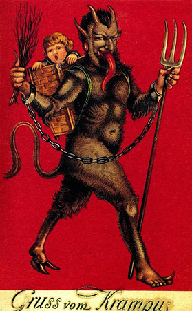
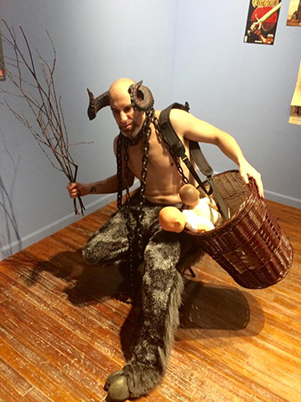
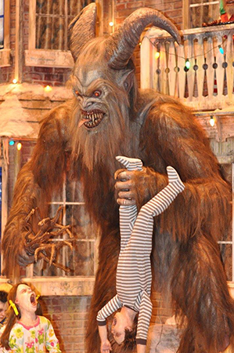
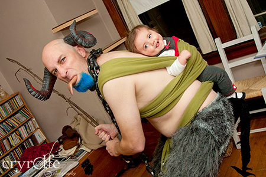
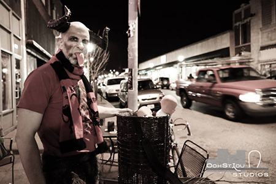

Mynx Pole Pole Extravaganza
One year, I even had Krampus pole routine that I performed for a Krampus Christmas Pageant.
|  |  |
One year, I even had Krampus pole routine that I performed for a Krampus Christmas Pageant.
Years ago I was a member of a local Drawing and Painting MeetUp because I had decided to teach myself how to draw. At some point I had also become a model for that same group, as what happens when your scheduled model fails to show up. The leader of the group, Brian Anderson, also ran smaller drawing sessions at his apartment. One day he asked me if I wanted to do a costume pose as Krampus.
"Who is Krampus?" I asked.
Krampus is the Devil of Christmas. The companion of Saint Nicholas. Where St. Nick gives toys and gifts to the good children, Krampus brings the beatings to the bad ones," said Brian.
"I am so there it's not even funny."
And I set out building my costume over the years. The first year I had bought the furry leggings and used plastic bull horns. Unfortunately they didn't want to stick to my head even when we used duct tape.
The second year, I thought that Krampus needed a hairier chest. So I bought some moss and tried to glue it to my chest using Spray Mount©, but that was a bad-bad idea.
Eventually I got a decent pair of horns, and a tongue, and matching hooves to go along with my costume. Then came the switches, tongue and tail. Finally I assembled all the pieces of my costume.
For five years I was Krampus for my local drawing group, then some friends wanted to host an official Krampusnacht, and pub crawl. My Krampus is the official mascot Krampus of a field full of Krampuses, and has been for the past 3 years.>Every year on Dec 2nd weekend (or closest to) a horde of Krampuses will roam the streets of St. Louis with me as their leader∗
∗ So I like to think.